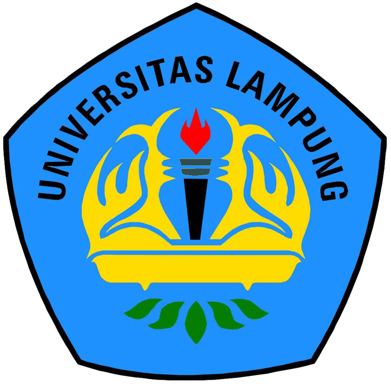

Sejarah
Keinginan mendirikan perguruan tinggi di Lampung merupakan cita-cita para tokoh masyarakat Lampung sejak tahun 1960-an, yang dimaksudkan sebagai wahana untuk mencerdaskan masyarakat pada jenjang pendidikan tinggi, karena semakin banyak putera-puteri terbaik lulusan SMA yang harus pergi ke Jawa atau Palembang untuk dapat melanjutkan studinya. Di pihak lain, Provinsi Lampung yang baru terbentuk juga sangat memerlukan tenaga lulusan perguruan tinggi dalam jumlah banyak guna melaksanakan kegiatan pembangunan di daerah ini. Cita-cita pendirian perguruan tinggi di Lampung tersebut diupayakan terwujud oleh dua panitia, yaitu:
Panitia Pendirian dan Perluasan Sekolah Lanjutan (P3SL) yang berubah menjadi Panitia Pendirian dan Perluasan Sekolah Lanjutan dan Fakultas (P3SLF) diketuai oleh Zainal Abidin Pagar Alam dan Sekretaris Tjan Djiit Soe. Panitia Persiapan Pembentukan Yayasan Perguruan Tinggi Lampung (P3YPTL) diketuai oleh Nadirsjah Zaini, M.A. dan Sekretaris Hilman Hadikusuma .Kedua panitia dilebur menjadi Yayasan Pembina Perguruan Tinggi Lampung (YPPTL). Yayasan ini membentuk Fakultas Ekonomi, Hukum, dan Sosial (FEHS), berkedudukan di Jalan Hasanuddin 34, Bandarlampung.